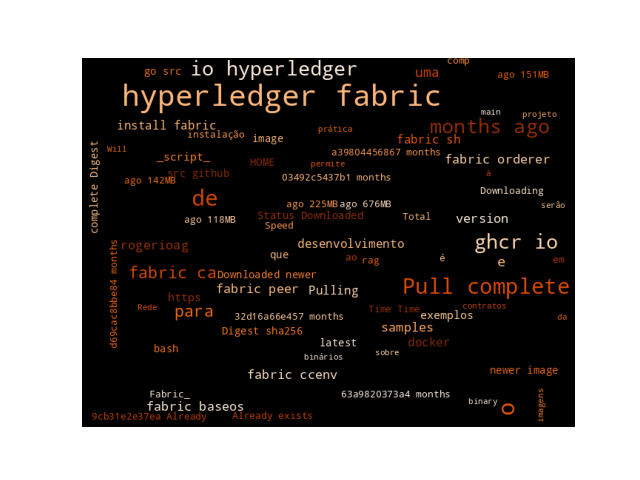

16 Prática sobre Hyperledger: Introdução ao Fabric
Introdução ao Fabric
16.1 Introdução
O Hyperledger Fabric é um projeto do Hyperledger que é uma plataforma para o desenvolvimento de blockchains permissionados, com suporte à modularidade de componentes e versatilidade para uma série de contextos da indústria.

O Fabric oferece uma pilha de desenvolvimento em cinco camadas:
Pré-requisitos de software: Lista de dependências de softwares necessários para dar suporte à instalação e execução de projetos com
Fabric.Fabrice Exemplos: Fornecem os executáveis para rodar uma rede Fabric com exemplos de código.APIsde Contratos: para o desenvolvimento de contratos inteligentes que serão executados em uma Rede Fabric.Application APIs: para o desenvolvimento de aplicações _ blockchain_.A aplicação: a aplicação desenvolvida utilizará os kits de desenvolvimento (SDKs) para chamar contratos inteligentes em execução em uma Rede Fabric.
Ele pode ser instalado via uma script que permite instalar binários, exemplos e imagens docker.
16.2 Instalando os binários do Fabric, Exemplos e Imagens Docker
Crie um diretório para ser o diretório de trabalho, os desenvolvedores Go usam o padrão $HOME/go/src/github.com/<your_github_userid>. Esta é uma recomendação da comunidade Golang para projetos que utilizem Go.
No meu caso foi a seguinte sequência de comandos no terminal:
$ mkdir -p $HOME/go/src/github.com/rogerioag
$ cd $HOME/go/src/github.com/rogerioagPara fazer o download do script de instalação:
[rogerioag]$ curl -sSLO https://raw.githubusercontent.com/hyperledger/fabric/main/scripts/install-fabric.sh && chmod +x install-fabric.shAo executa o script com a opção -h ele mostrará o conjunto de opções aceitas pelo script de instalação.
[rogerioag]$ ./install-fabric.sh -h
Usage: ./install-fabric.sh [-f|--fabric-version <arg>] [-c|--ca-version <arg>] <comp-1> [<comp-2>] ... [<comp-n>] ...
<comp>: Component to install one or more of d[ocker]|b[inary]|s[amples]. If none specified, all will be installed
-f, --fabric-version: FabricVersion (default: '2.5.14')
-c, --ca-version: Fabric CA Version (default: '1.5.15')O script de instalação permite a escolha de componentes que serão baixados e adicionados à plataforma de desenvolvimento. Permite indicar se queremos utilizar o docker ou o podmanpara fazer download das images de conteiner, se queremos os binários do Fabric e os exemplos de utilização.
Para baixar as imagens e conteineres docker e clonar o repositório de exemplos, execute o comando:
$ ./install-fabric.sh docker samples binary
or
$ ./install-fabric.sh d s bForcendo os argumentos ao script as opções escolhidas serão baixadas.
[rogerioag]$ sudo ./install-fabric.sh docker samples binary
[sudo] senha para rag:
Clone hyperledger/fabric-samples repo
===> Changing directory to fabric-samples
fabric-samples v2.5.12 does not exist, defaulting to main. fabric-samples main branch is intended to work with recent versions of fabric.
Pull Hyperledger Fabric binaries
===> Downloading version 2.5.12 platform specific fabric binaries
===> Downloading: https://github.com/hyperledger/fabric/releases/download/v2.5.12/hyperledger-fabric-linux-amd64-2.5.12.tar.gz
===> Will unpack to: /home/rag/go/src/github.com/rogerioag/fabric-samples
% Total % Received % Xferd Average Speed Time Time Time Current
Dload Upload Total Spent Left Speed
0 0 0 0 0 0 0 0 --:--:-- --:--:-- --:--:-- 0
100 118M 100 118M 0 0 80.6M 0 0:00:01 0:00:01 --:--:-- 85.4M
==> Done.
===> Downloading version 1.5.15 platform specific fabric-ca-client binary
===> Downloading: https://github.com/hyperledger/fabric-ca/releases/download/v1.5.15/hyperledger-fabric-ca-linux-amd64-1.5.15.tar.gz
===> Will unpack to: /home/rag/go/src/github.com/rogerioag/fabric-samples
% Total % Received % Xferd Average Speed Time Time Time Current
Dload Upload Total Spent Left Speed
0 0 0 0 0 0 0 0 --:--:-- --:--:-- --:--:-- 0
100 30.0M 100 30.0M 0 0 49.3M 0 --:--:-- --:--:-- --:--:-- 173M
==> Done.
Pull Hyperledger Fabric docker images
FABRIC_IMAGES: peer orderer ccenv baseos
===> Pulling fabric Images
====> ghcr.io/hyperledger/fabric-peer:2.5.12
2.5.12: Pulling from hyperledger/fabric-peer
9cb31e2e37ea: Pull complete
db23127575f9: Pull complete
ab49923c0970: Pull complete
8b1c4d4ea1b4: Pull complete
d8dbf9e3c4ef: Pull complete
ee3e31e4b37b: Pull complete
Digest: sha256:f5f3fb3b061a067df0d13ed109fe1109cc9cbf02207936438435fcf431a11440
Status: Downloaded newer image for ghcr.io/hyperledger/fabric-peer:2.5.12
ghcr.io/hyperledger/fabric-peer:2.5.12
====> ghcr.io/hyperledger/fabric-orderer:2.5.12
2.5.12: Pulling from hyperledger/fabric-orderer
9cb31e2e37ea: Already exists
904f7cf7cc46: Pull complete
5a2ed0dfe063: Pull complete
eeedc9027925: Pull complete
92d83fce7ae2: Pull complete
ea198b0fa631: Pull complete
Digest: sha256:5a91a378ed13de92d1566781dede60baaca42265076f96b5921ad03b25184c6a
Status: Downloaded newer image for ghcr.io/hyperledger/fabric-orderer:2.5.12
ghcr.io/hyperledger/fabric-orderer:2.5.12
====> ghcr.io/hyperledger/fabric-ccenv:2.5.12
2.5.12: Pulling from hyperledger/fabric-ccenv
9cb31e2e37ea: Already exists
402cfb9ba580: Pull complete
6b3d92f86452: Pull complete
a650c2728f06: Pull complete
1f31c61b2127: Pull complete
fc2f70f80fa1: Pull complete
6f72b6cc2521: Pull complete
Digest: sha256:72bda013702ad5a4103c00e6b58617110da69c496b60993e35c9d9e09c1a338e
Status: Downloaded newer image for ghcr.io/hyperledger/fabric-ccenv:2.5.12
ghcr.io/hyperledger/fabric-ccenv:2.5.12
====> ghcr.io/hyperledger/fabric-baseos:2.5.12
2.5.12: Pulling from hyperledger/fabric-baseos
9cb31e2e37ea: Already exists
ed2e4dedd96b: Pull complete
dadd0deeae37: Pull complete
9e9ec9334ad1: Pull complete
Digest: sha256:f0dab8b4acd484e35c2303593c6ce850e3d000b77d86b25d2116cbcb67f8b6ff
Status: Downloaded newer image for ghcr.io/hyperledger/fabric-baseos:2.5.12
ghcr.io/hyperledger/fabric-baseos:2.5.12
===> Pulling fabric ca Image
====> ghcr.io/hyperledger/fabric-ca:1.5.15
1.5.15: Pulling from hyperledger/fabric-ca
9cb31e2e37ea: Already exists
4c80c17dd71c: Pull complete
dbbb11f20e2d: Pull complete
943126a1b0fb: Pull complete
Digest: sha256:4704861f82be659372510b72c1e8b141563743e1f5840d8c094ded1df9253c68
Status: Downloaded newer image for ghcr.io/hyperledger/fabric-ca:1.5.15
ghcr.io/hyperledger/fabric-ca:1.5.15
===> List out hyperledger images
hyperledger/fabric-peer 2.5 63a9820373a4 7 months ago 151MB
hyperledger/fabric-peer 2.5.12 63a9820373a4 7 months ago 151MB
hyperledger/fabric-peer latest 63a9820373a4 7 months ago 151MB
ghcr.io/hyperledger/fabric-peer 2.5.12 63a9820373a4 7 months ago 151MB
hyperledger/fabric-orderer 2.5 d69cac8bbe84 7 months ago 118MB
hyperledger/fabric-orderer 2.5.12 d69cac8bbe84 7 months ago 118MB
hyperledger/fabric-orderer latest d69cac8bbe84 7 months ago 118MB
ghcr.io/hyperledger/fabric-orderer 2.5.12 d69cac8bbe84 7 months ago 118MB
hyperledger/fabric-ccenv 2.5 a39804456867 7 months ago 676MB
hyperledger/fabric-ccenv 2.5.12 a39804456867 7 months ago 676MB
hyperledger/fabric-ccenv latest a39804456867 7 months ago 676MB
ghcr.io/hyperledger/fabric-ccenv 2.5.12 a39804456867 7 months ago 676MB
hyperledger/fabric-baseos 2.5 32d16a66e457 7 months ago 142MB
hyperledger/fabric-baseos 2.5.12 32d16a66e457 7 months ago 142MB
hyperledger/fabric-baseos latest 32d16a66e457 7 months ago 142MB
ghcr.io/hyperledger/fabric-baseos 2.5.12 32d16a66e457 7 months ago 142MB
hyperledger/fabric-ca 1.5 03492c5437b1 8 months ago 225MB
hyperledger/fabric-ca 1.5.15 03492c5437b1 8 months ago 225MB
hyperledger/fabric-ca latest 03492c5437b1 8 months ago 225MB
ghcr.io/hyperledger/fabric-ca 1.5.15 03492c5437b1 8 months ago 225MB
hyperledger/besu 23.4.1 7552fe97424d 2 years ago 669MB
[rag@backporting rogerioag]$ Por pdrão o script de instalação irá buscar os componentes da última versão. Caso queiramos baixar versões específicas podemos fornecê-las com os parâmetros --fabric-version e -ca-version ou opções curtas -f e -c.
Por exemplo, para baixamos os binários na versão v2.5.14, precisaremos executar o comando:
$ ./install-fabric.sh --fabric-version 2.5.14 binaryAssim teremos instalados em nosso sistema a versão desejada dos binários, exemplos ou imagens docker.
Para desenvolvedores que queiram definir um ambiente de desenvolvimento para contribuir com o Fabric, instruções pode ser vistas no link Setting up the contributor development environment.
Ajuda e questões podem ser enviadas para o canal fabric-questions no Hyperledger Discord Chat ou no StackOverflow.
16.3 Testando a Rede
[rag@backporting test-network]$ sudo ./network.sh down
[sudo] senha para rag:
Using docker and docker-compose
Stopping network
WARN[0000] /home/rag/go/src/github.com/rogerioag/fabric-samples/test-network/compose/compose-bft-test-net.yaml: the attribute `version` is obsolete, it will be ignored, please remove it to avoid potential confusion
WARN[0000] /home/rag/go/src/github.com/rogerioag/fabric-samples/test-network/compose/docker/docker-compose-bft-test-net.yaml: the attribute `version` is obsolete, it will be ignored, please remove it to avoid potential confusion
WARN[0000] /home/rag/go/src/github.com/rogerioag/fabric-samples/test-network/compose/compose-couch.yaml: the attribute `version` is obsolete, it will be ignored, please remove it to avoid potential confusion
WARN[0000] /home/rag/go/src/github.com/rogerioag/fabric-samples/test-network/compose/docker/docker-compose-couch.yaml: the attribute `version` is obsolete, it will be ignored, please remove it to avoid potential confusion
WARN[0000] /home/rag/go/src/github.com/rogerioag/fabric-samples/test-network/compose/compose-ca.yaml: the attribute `version` is obsolete, it will be ignored, please remove it to avoid potential confusion
WARN[0000] /home/rag/go/src/github.com/rogerioag/fabric-samples/test-network/compose/docker/docker-compose-ca.yaml: the attribute `version` is obsolete, it will be ignored, please remove it to avoid potential confusion
WARN[0000] /home/rag/go/src/github.com/rogerioag/fabric-samples/test-network/addOrg3/compose/compose-org3.yaml: the attribute `version` is obsolete, it will be ignored, please remove it to avoid potential confusion
WARN[0000] /home/rag/go/src/github.com/rogerioag/fabric-samples/test-network/addOrg3/compose/docker/docker-compose-org3.yaml: the attribute `version` is obsolete, it will be ignored, please remove it to avoid potential confusion
WARN[0000] /home/rag/go/src/github.com/rogerioag/fabric-samples/test-network/addOrg3/compose/compose-couch-org3.yaml: the attribute `version` is obsolete, it will be ignored, please remove it to avoid potential confusion
WARN[0000] /home/rag/go/src/github.com/rogerioag/fabric-samples/test-network/addOrg3/compose/docker/docker-compose-couch-org3.yaml: the attribute `version` is obsolete, it will be ignored, please remove it to avoid potential confusion
WARN[0000] /home/rag/go/src/github.com/rogerioag/fabric-samples/test-network/addOrg3/compose/compose-ca-org3.yaml: the attribute `version` is obsolete, it will be ignored, please remove it to avoid potential confusion
WARN[0000] /home/rag/go/src/github.com/rogerioag/fabric-samples/test-network/addOrg3/compose/docker/docker-compose-ca-org3.yaml: the attribute `version` is obsolete, it will be ignored, please remove it to avoid potential confusion
Error response from daemon: get docker_orderer.example.com: no such volume
Error response from daemon: get docker_peer0.org1.example.com: no such volume
Error response from daemon: get docker_peer0.org2.example.com: no such volume
Removing remaining containers
Removing generated chaincode docker images
Unable to find image 'busybox:latest' locally
latest: Pulling from library/busybox
e59838ecfec5: Pull complete
Digest: sha256:e3652a00a2fabd16ce889f0aa32c38eec347b997e73bd09e69c962ec7f8732ee
Status: Downloaded newer image for busybox:latest
[rag@backporting test-network]$ sudo ./network.sh up
Using docker and docker-compose
Starting nodes with CLI timeout of '5' tries and CLI delay of '3' seconds and using database 'leveldb' with crypto from 'cryptogen'
LOCAL_VERSION=v2.5.12
DOCKER_IMAGE_VERSION=v2.5.12
/home/rag/go/src/github.com/rogerioag/fabric-samples/bin/cryptogen
Generating certificates using cryptogen tool
Creating Org1 Identities
+ cryptogen generate --config=./organizations/cryptogen/crypto-config-org1.yaml --output=organizations
org1.example.com
+ res=0
Creating Org2 Identities
+ cryptogen generate --config=./organizations/cryptogen/crypto-config-org2.yaml --output=organizations
org2.example.com
+ res=0
Creating Orderer Org Identities
+ cryptogen generate --config=./organizations/cryptogen/crypto-config-orderer.yaml --output=organizations
+ res=0
Generating CCP files for Org1 and Org2
WARN[0000] /home/rag/go/src/github.com/rogerioag/fabric-samples/test-network/compose/compose-test-net.yaml: the attribute `version` is obsolete, it will be ignored, please remove it to avoid potential confusion
WARN[0000] /home/rag/go/src/github.com/rogerioag/fabric-samples/test-network/compose/docker/docker-compose-test-net.yaml: the attribute `version` is obsolete, it will be ignored, please remove it to avoid potential confusion
[+] Running 7/7
✔ Network fabric_test Created 0.2s
✔ Volume compose_peer0.org2.example.com Created 0.0s
✔ Volume compose_orderer.example.com Created 0.0s
✔ Volume compose_peer0.org1.example.com Created 0.0s
✔ Container peer0.org1.example.com Started 0.3s
✔ Container orderer.example.com Started 0.2s
✔ Container peer0.org2.example.com Started 0.3s
CONTAINER ID IMAGE COMMAND CREATED STATUS PORTS NAMES
0fa2a7e48d9a hyperledger/fabric-peer:latest "peer node start" Less than a second ago Up Less than a second 0.0.0.0:7051->7051/tcp, [::]:7051->7051/tcp, 0.0.0.0:9444->9444/tcp, [::]:9444->9444/tcp peer0.org1.example.com
c4fd29234d5c hyperledger/fabric-peer:latest "peer node start" Less than a second ago Up Less than a second 0.0.0.0:9051->9051/tcp, [::]:9051->9051/tcp, 7051/tcp, 0.0.0.0:9445->9445/tcp, [::]:9445->9445/tcp peer0.org2.example.com
ccdcdaa10327 hyperledger/fabric-orderer:latest "orderer" Less than a second ago Up Less than a second 0.0.0.0:7050->7050/tcp, [::]:7050->7050/tcp, 0.0.0.0:7053->7053/tcp, [::]:7053->7053/tcp, 0.0.0.0:9443->9443/tcp, [::]:9443->9443/tcp orderer.example.com
c87080cd096a ollama/ollama "/bin/ollama serve" 6 months ago Created ollama
$ Criando um canal (channel):
Você pode usar o script network.sh para criar um canal entre Org1 e Org2 e juntar seus pares no canal. O comando seguinte cria um canal com o nome padrão mychannel:
[test-network]$ sudo ./network.sh createChannel
Using docker and docker-compose
Creating channel 'mychannel'.
If network is not up, starting nodes with CLI timeout of '5' tries and CLI delay of '3' seconds and using database 'leveldb
Bringing up network
LOCAL_VERSION=v2.5.12
DOCKER_IMAGE_VERSION=v2.5.12
[+] Running 3/3
✔ Container peer0.org2.example.com Running 0.0s
✔ Container peer0.org1.example.com Running 0.0s
✔ Container orderer.example.com Running 0.0s
CONTAINER ID IMAGE COMMAND CREATED STATUS PORTS NAMES
fe69870dda46 hyperledger/fabric-peer:latest "peer node start" 3 minutes ago Up 3 minutes 0.0.0.0:7051->7051/tcp, [::]:7051->7051/tcp, 0.0.0.0:9444->9444/tcp, [::]:9444->9444/tcp peer0.org1.example.com
8e0077cbff4e hyperledger/fabric-orderer:latest "orderer" 3 minutes ago Up 3 minutes 0.0.0.0:7050->7050/tcp, [::]:7050->7050/tcp, 0.0.0.0:7053->7053/tcp, [::]:7053->7053/tcp, 0.0.0.0:9443->9443/tcp, [::]:9443->9443/tcp orderer.example.com
f2379656da55 hyperledger/fabric-peer:latest "peer node start" 3 minutes ago Up 3 minutes 0.0.0.0:9051->9051/tcp, [::]:9051->9051/tcp, 7051/tcp, 0.0.0.0:9445->9445/tcp, [::]:9445->9445/tcp peer0.org2.example.com
Using docker and docker-compose
Generating channel genesis block 'mychannel.block'
Using organization 1
/home/rag/go/src/github.com/rogerioag/fabric-samples/bin/configtxgen
+ '[' 0 -eq 1 ']'
+ configtxgen -profile ChannelUsingRaft -outputBlock ./channel-artifacts/mychannel.block -channelID mychannel
2025-11-04 10:27:27.246 -03 0001 INFO [common.tools.configtxgen] main -> Loading configuration
2025-11-04 10:27:27.250 -03 0002 INFO [common.tools.configtxgen.localconfig] completeInitialization -> orderer type: etcdraft
2025-11-04 10:27:27.250 -03 0003 INFO [common.tools.configtxgen.localconfig] completeInitialization -> Orderer.EtcdRaft.Options unset, setting to tick_interval:"500ms" election_tick:10 heartbeat_tick:1 max_inflight_blocks:5 snapshot_interval_size:16777216
2025-11-04 10:27:27.250 -03 0004 INFO [common.tools.configtxgen.localconfig] Load -> Loaded configuration: /home/rag/go/src/github.com/rogerioag/fabric-samples/test-network/configtx/configtx.yaml
2025-11-04 10:27:27.253 -03 0005 INFO [common.tools.configtxgen] doOutputBlock -> Generating genesis block
2025-11-04 10:27:27.253 -03 0006 INFO [common.tools.configtxgen] doOutputBlock -> Creating application channel genesis block
2025-11-04 10:27:27.253 -03 0007 INFO [common.tools.configtxgen] doOutputBlock -> Writing genesis block
+ res=0
Creating channel mychannel
Adding orderers
+ . scripts/orderer.sh mychannel
+ '[' 0 -eq 1 ']'
+ res=0
Status: 201
{
"name": "mychannel",
"url": "/participation/v1/channels/mychannel",
"consensusRelation": "consenter",
"status": "active",
"height": 1
}
Channel 'mychannel' created
Joining org1 peer to the channel...
Using organization 1
+ peer channel join -b ./channel-artifacts/mychannel.block
+ res=0
2025-11-04 10:27:33.361 -03 0001 INFO [channelCmd] InitCmdFactory -> Endorser and orderer connections initialized
2025-11-04 10:27:33.397 -03 0002 INFO [channelCmd] executeJoin -> Successfully submitted proposal to join channel
Joining org2 peer to the channel...
Using organization 2
+ peer channel join -b ./channel-artifacts/mychannel.block
+ res=0
2025-11-04 10:27:36.453 -03 0001 INFO [channelCmd] InitCmdFactory -> Endorser and orderer connections initialized
2025-11-04 10:27:36.491 -03 0002 INFO [channelCmd] executeJoin -> Successfully submitted proposal to join channel
Setting anchor peer for org1...
Using organization 1
Fetching channel config for channel mychannel
Using organization 1
Fetching the most recent configuration block for the channel
++ peer channel fetch config /home/rag/go/src/github.com/rogerioag/fabric-samples/test-network/channel-artifacts/config_block.pb -o localhost:7050 --ordererTLSHostnameOverride orderer.example.com -c mychannel --tls --cafile /home/rag/go/src/github.com/rogerioag/fabric-samples/test-network/organizations/ordererOrganizations/example.com/tlsca/tlsca.example.com-cert.pem
2025-11-04 10:27:36.558 -03 0001 INFO [channelCmd] InitCmdFactory -> Endorser and orderer connections initialized
2025-11-04 10:27:36.561 -03 0002 INFO [cli.common] readBlock -> Received block: 0
2025-11-04 10:27:36.561 -03 0003 INFO [channelCmd] fetch -> Retrieving last config block: 0
2025-11-04 10:27:36.562 -03 0004 INFO [cli.common] readBlock -> Received block: 0
Decoding config block to JSON and isolating config to /home/rag/go/src/github.com/rogerioag/fabric-samples/test-network/channel-artifacts/Org1MSPconfig.json
++ configtxlator proto_decode --input /home/rag/go/src/github.com/rogerioag/fabric-samples/test-network/channel-artifacts/config_block.pb --type common.Block --output /home/rag/go/src/github.com/rogerioag/fabric-samples/test-network/channel-artifacts/config_block.json
++ jq '.data.data[0].payload.data.config' /home/rag/go/src/github.com/rogerioag/fabric-samples/test-network/channel-artifacts/config_block.json
++ res=0
Generating anchor peer update transaction for Org1 on channel mychannel
++ jq '.channel_group.groups.Application.groups.Org1MSP.values += {"AnchorPeers":{"mod_policy": "Admins","value":{"anchor_peers": [{"host": "peer0.org1.example.com","port": 7051}]},"version": "0"}}' /home/rag/go/src/github.com/rogerioag/fabric-samples/test-network/channel-artifacts/Org1MSPconfig.json
++ res=0
++ configtxlator proto_encode --input /home/rag/go/src/github.com/rogerioag/fabric-samples/test-network/channel-artifacts/Org1MSPconfig.json --type common.Config --output /home/rag/go/src/github.com/rogerioag/fabric-samples/test-network/channel-artifacts/original_config.pb
++ configtxlator proto_encode --input /home/rag/go/src/github.com/rogerioag/fabric-samples/test-network/channel-artifacts/Org1MSPmodified_config.json --type common.Config --output /home/rag/go/src/github.com/rogerioag/fabric-samples/test-network/channel-artifacts/modified_config.pb
++ configtxlator compute_update --channel_id mychannel --original /home/rag/go/src/github.com/rogerioag/fabric-samples/test-network/channel-artifacts/original_config.pb --updated /home/rag/go/src/github.com/rogerioag/fabric-samples/test-network/channel-artifacts/modified_config.pb --output /home/rag/go/src/github.com/rogerioag/fabric-samples/test-network/channel-artifacts/config_update.pb
++ configtxlator proto_decode --input /home/rag/go/src/github.com/rogerioag/fabric-samples/test-network/channel-artifacts/config_update.pb --type common.ConfigUpdate --output /home/rag/go/src/github.com/rogerioag/fabric-samples/test-network/channel-artifacts/config_update.json
++ jq .
+++ cat /home/rag/go/src/github.com/rogerioag/fabric-samples/test-network/channel-artifacts/config_update.json
++ echo '{"payload":{"header":{"channel_header":{"channel_id":"mychannel", "type":2}},"data":{"config_update":{' '"channel_id":' '"mychannel",' '"isolated_data":' '{},' '"read_set":' '{' '"groups":' '{' '"Application":' '{' '"groups":' '{' '"Org1MSP":' '{' '"groups":' '{},' '"mod_policy":' '"",' '"policies":' '{' '"Admins":' '{' '"mod_policy":' '"",' '"policy":' null, '"version":' '"0"' '},' '"Endorsement":' '{' '"mod_policy":' '"",' '"policy":' null, '"version":' '"0"' '},' '"Readers":' '{' '"mod_policy":' '"",' '"policy":' null, '"version":' '"0"' '},' '"Writers":' '{' '"mod_policy":' '"",' '"policy":' null, '"version":' '"0"' '}' '},' '"values":' '{' '"MSP":' '{' '"mod_policy":' '"",' '"value":' null, '"version":' '"0"' '}' '},' '"version":' '"0"' '}' '},' '"mod_policy":' '"",' '"policies":' '{},' '"values":' '{},' '"version":' '"0"' '}' '},' '"mod_policy":' '"",' '"policies":' '{},' '"values":' '{},' '"version":' '"0"' '},' '"write_set":' '{' '"groups":' '{' '"Application":' '{' '"groups":' '{' '"Org1MSP":' '{' '"groups":' '{},' '"mod_policy":' '"Admins",' '"policies":' '{' '"Admins":' '{' '"mod_policy":' '"",' '"policy":' null, '"version":' '"0"' '},' '"Endorsement":' '{' '"mod_policy":' '"",' '"policy":' null, '"version":' '"0"' '},' '"Readers":' '{' '"mod_policy":' '"",' '"policy":' null, '"version":' '"0"' '},' '"Writers":' '{' '"mod_policy":' '"",' '"policy":' null, '"version":' '"0"' '}' '},' '"values":' '{' '"AnchorPeers":' '{' '"mod_policy":' '"Admins",' '"value":' '{' '"anchor_peers":' '[' '{' '"host":' '"peer0.org1.example.com",' '"port":' 7051 '}' ']' '},' '"version":' '"0"' '},' '"MSP":' '{' '"mod_policy":' '"",' '"value":' null, '"version":' '"0"' '}' '},' '"version":' '"1"' '}' '},' '"mod_policy":' '"",' '"policies":' '{},' '"values":' '{},' '"version":' '"0"' '}' '},' '"mod_policy":' '"",' '"policies":' '{},' '"values":' '{},' '"version":' '"0"' '}' '}}}}'
++ configtxlator proto_encode --input /home/rag/go/src/github.com/rogerioag/fabric-samples/test-network/channel-artifacts/config_update_in_envelope.json --type common.Envelope --output /home/rag/go/src/github.com/rogerioag/fabric-samples/test-network/channel-artifacts/Org1MSPanchors.tx
2025-11-04 10:27:36.691 -03 0001 INFO [channelCmd] InitCmdFactory -> Endorser and orderer connections initialized
2025-11-04 10:27:36.704 -03 0002 INFO [channelCmd] update -> Successfully submitted channel update
Anchor peer set for org 'Org1MSP' on channel 'mychannel'
Setting anchor peer for org2...
Using organization 2
Fetching channel config for channel mychannel
Using organization 2
Fetching the most recent configuration block for the channel
++ peer channel fetch config /home/rag/go/src/github.com/rogerioag/fabric-samples/test-network/channel-artifacts/config_block.pb -o localhost:7050 --ordererTLSHostnameOverride orderer.example.com -c mychannel --tls --cafile /home/rag/go/src/github.com/rogerioag/fabric-samples/test-network/organizations/ordererOrganizations/example.com/tlsca/tlsca.example.com-cert.pem
2025-11-04 10:27:36.770 -03 0001 INFO [channelCmd] InitCmdFactory -> Endorser and orderer connections initialized
2025-11-04 10:27:36.772 -03 0002 INFO [cli.common] readBlock -> Received block: 1
2025-11-04 10:27:36.772 -03 0003 INFO [channelCmd] fetch -> Retrieving last config block: 1
2025-11-04 10:27:36.774 -03 0004 INFO [cli.common] readBlock -> Received block: 1
Decoding config block to JSON and isolating config to /home/rag/go/src/github.com/rogerioag/fabric-samples/test-network/channel-artifacts/Org2MSPconfig.json
++ configtxlator proto_decode --input /home/rag/go/src/github.com/rogerioag/fabric-samples/test-network/channel-artifacts/config_block.pb --type common.Block --output /home/rag/go/src/github.com/rogerioag/fabric-samples/test-network/channel-artifacts/config_block.json
++ jq '.data.data[0].payload.data.config' /home/rag/go/src/github.com/rogerioag/fabric-samples/test-network/channel-artifacts/config_block.json
++ res=0
Generating anchor peer update transaction for Org2 on channel mychannel
++ jq '.channel_group.groups.Application.groups.Org2MSP.values += {"AnchorPeers":{"mod_policy": "Admins","value":{"anchor_peers": [{"host": "peer0.org2.example.com","port": 9051}]},"version": "0"}}' /home/rag/go/src/github.com/rogerioag/fabric-samples/test-network/channel-artifacts/Org2MSPconfig.json
++ res=0
++ configtxlator proto_encode --input /home/rag/go/src/github.com/rogerioag/fabric-samples/test-network/channel-artifacts/Org2MSPconfig.json --type common.Config --output /home/rag/go/src/github.com/rogerioag/fabric-samples/test-network/channel-artifacts/original_config.pb
++ configtxlator proto_encode --input /home/rag/go/src/github.com/rogerioag/fabric-samples/test-network/channel-artifacts/Org2MSPmodified_config.json --type common.Config --output /home/rag/go/src/github.com/rogerioag/fabric-samples/test-network/channel-artifacts/modified_config.pb
++ configtxlator compute_update --channel_id mychannel --original /home/rag/go/src/github.com/rogerioag/fabric-samples/test-network/channel-artifacts/original_config.pb --updated /home/rag/go/src/github.com/rogerioag/fabric-samples/test-network/channel-artifacts/modified_config.pb --output /home/rag/go/src/github.com/rogerioag/fabric-samples/test-network/channel-artifacts/config_update.pb
++ configtxlator proto_decode --input /home/rag/go/src/github.com/rogerioag/fabric-samples/test-network/channel-artifacts/config_update.pb --type common.ConfigUpdate --output /home/rag/go/src/github.com/rogerioag/fabric-samples/test-network/channel-artifacts/config_update.json
++ jq .
+++ cat /home/rag/go/src/github.com/rogerioag/fabric-samples/test-network/channel-artifacts/config_update.json
++ echo '{"payload":{"header":{"channel_header":{"channel_id":"mychannel", "type":2}},"data":{"config_update":{' '"channel_id":' '"mychannel",' '"isolated_data":' '{},' '"read_set":' '{' '"groups":' '{' '"Application":' '{' '"groups":' '{' '"Org2MSP":' '{' '"groups":' '{},' '"mod_policy":' '"",' '"policies":' '{' '"Admins":' '{' '"mod_policy":' '"",' '"policy":' null, '"version":' '"0"' '},' '"Endorsement":' '{' '"mod_policy":' '"",' '"policy":' null, '"version":' '"0"' '},' '"Readers":' '{' '"mod_policy":' '"",' '"policy":' null, '"version":' '"0"' '},' '"Writers":' '{' '"mod_policy":' '"",' '"policy":' null, '"version":' '"0"' '}' '},' '"values":' '{' '"MSP":' '{' '"mod_policy":' '"",' '"value":' null, '"version":' '"0"' '}' '},' '"version":' '"0"' '}' '},' '"mod_policy":' '"",' '"policies":' '{},' '"values":' '{},' '"version":' '"0"' '}' '},' '"mod_policy":' '"",' '"policies":' '{},' '"values":' '{},' '"version":' '"0"' '},' '"write_set":' '{' '"groups":' '{' '"Application":' '{' '"groups":' '{' '"Org2MSP":' '{' '"groups":' '{},' '"mod_policy":' '"Admins",' '"policies":' '{' '"Admins":' '{' '"mod_policy":' '"",' '"policy":' null, '"version":' '"0"' '},' '"Endorsement":' '{' '"mod_policy":' '"",' '"policy":' null, '"version":' '"0"' '},' '"Readers":' '{' '"mod_policy":' '"",' '"policy":' null, '"version":' '"0"' '},' '"Writers":' '{' '"mod_policy":' '"",' '"policy":' null, '"version":' '"0"' '}' '},' '"values":' '{' '"AnchorPeers":' '{' '"mod_policy":' '"Admins",' '"value":' '{' '"anchor_peers":' '[' '{' '"host":' '"peer0.org2.example.com",' '"port":' 9051 '}' ']' '},' '"version":' '"0"' '},' '"MSP":' '{' '"mod_policy":' '"",' '"value":' null, '"version":' '"0"' '}' '},' '"version":' '"1"' '}' '},' '"mod_policy":' '"",' '"policies":' '{},' '"values":' '{},' '"version":' '"0"' '}' '},' '"mod_policy":' '"",' '"policies":' '{},' '"values":' '{},' '"version":' '"0"' '}' '}}}}'
++ configtxlator proto_encode --input /home/rag/go/src/github.com/rogerioag/fabric-samples/test-network/channel-artifacts/config_update_in_envelope.json --type common.Envelope --output /home/rag/go/src/github.com/rogerioag/fabric-samples/test-network/channel-artifacts/Org2MSPanchors.tx
2025-11-04 10:27:36.895 -03 0001 INFO [channelCmd] InitCmdFactory -> Endorser and orderer connections initialized
2025-11-04 10:27:36.909 -03 0002 INFO [channelCmd] update -> Successfully submitted channel update
Anchor peer set for org 'Org2MSP' on channel 'mychannel'
Channel 'mychannel' joined
[test-network]$ 16.4 Teste de deploy de contrato
Contratos Inteligentes são implantados na rede Fabric em pacotes denominados chaincode. Um chaincode é instalado nos pares de uma organização e então implantado para um canal, onde poderá ser utilizado para validar transações e interagir com o livro-razão da blockchain.
Antes que um chaincode possa ser implantado em um canal, os membros do canal precisam concordar com uma definição de chaincode que estabeleça a governança do chaincode. Quando o número necessário de organizações concordar, a definição do chaincode poderá ser confirmada no canal e o chaincode estará pronto para uso.
Depois de utilizar o script network.sh para criar um canal, você pode iniciar um chaincode no canal usando os comandos:
[test-network]$ sudo ./network.sh down
Using docker and docker-compose
Stopping network
WARN[0000] /home/rag/go/src/github.com/rogerioag/fabric-samples/test-network/compose/compose-couch.yaml: the attribute `version` is obsolete, it will be ignored, please remove it to avoid potential confusion
WARN[0000] /home/rag/go/src/github.com/rogerioag/fabric-samples/test-network/compose/docker/docker-compose-couch.yaml: the attribute `version` is obsolete, it will be ignored, please remove it to avoid potential confusion
WARN[0000] /home/rag/go/src/github.com/rogerioag/fabric-samples/test-network/compose/compose-ca.yaml: the attribute `version` is obsolete, it will be ignored, please remove it to avoid potential confusion
WARN[0000] /home/rag/go/src/github.com/rogerioag/fabric-samples/test-network/compose/docker/docker-compose-ca.yaml: the attribute `version` is obsolete, it will be ignored, please remove it to avoid potential confusion
WARN[0000] /home/rag/go/src/github.com/rogerioag/fabric-samples/test-network/addOrg3/compose/compose-org3.yaml: the attribute `version` is obsolete, it will be ignored, please remove it to avoid potential confusion
WARN[0000] /home/rag/go/src/github.com/rogerioag/fabric-samples/test-network/addOrg3/compose/docker/docker-compose-org3.yaml: the attribute `version` is obsolete, it will be ignored, please remove it to avoid potential confusion
WARN[0000] /home/rag/go/src/github.com/rogerioag/fabric-samples/test-network/addOrg3/compose/compose-couch-org3.yaml: the attribute `version` is obsolete, it will be ignored, please remove it to avoid potential confusion
WARN[0000] /home/rag/go/src/github.com/rogerioag/fabric-samples/test-network/addOrg3/compose/docker/docker-compose-couch-org3.yaml: the attribute `version` is obsolete, it will be ignored, please remove it to avoid potential confusion
WARN[0000] /home/rag/go/src/github.com/rogerioag/fabric-samples/test-network/addOrg3/compose/compose-ca-org3.yaml: the attribute `version` is obsolete, it will be ignored, please remove it to avoid potential confusion
WARN[0000] /home/rag/go/src/github.com/rogerioag/fabric-samples/test-network/addOrg3/compose/docker/docker-compose-ca-org3.yaml: the attribute `version` is obsolete, it will be ignored, please remove it to avoid potential confusion
[+] Running 7/7
✔ Container peer0.org1.example.com Removed 0.2s
✔ Container orderer.example.com Removed 0.4s
✔ Container peer0.org2.example.com Removed 0.5s
✔ Network fabric_test Removed 0.3s
✔ Volume compose_peer0.org1.example.com Removed 0.0s
✔ Volume compose_peer0.org2.example.com Removed 0.0s
✔ Volume compose_orderer.example.com Removed 0.0s
Error response from daemon: get docker_orderer.example.com: no such volume
Error response from daemon: get docker_peer0.org1.example.com: no such volume
Error response from daemon: get docker_peer0.org2.example.com: no such volume
Removing remaining containers
Removing generated chaincode docker images
Untagged: dev-peer0.org2.example.com-basic_1.0-b2974d4b301358c998b17154ea19f8376cd812fddfd96150a17888520322630d-ef357d40ebfe39d0a15485b12403b9782c71d33ab18fc04212211caec2185ff3:latest
Deleted: sha256:235f4b58bfa644e73a5751c5f2037420c28d20ffff61fd469900bf109bdc12a7
Deleted: sha256:6cea15d23465c96de40f27dbe69590884ee71cc2157b8584632afa56b9e0e4a1
Deleted: sha256:92cc19301c6fca8c988794ccf495aefd0380d0e72cf4333fb9645065e56bc852
Deleted: sha256:7674ed54e360df4ca199c40dae5d190a53eaad993f7f41874cae1eff7870881d
Untagged: dev-peer0.org1.example.com-basic_1.0-b2974d4b301358c998b17154ea19f8376cd812fddfd96150a17888520322630d-26aec9a2ea0d435f760201603f15157aa3795765d9f71891a570b68f1a41aef1:latest
Deleted: sha256:02bd03c8dd5f0d88bc6e83e076bde579660cabbd46b907f2404da660e1193745
Deleted: sha256:b4d87653ac78662a66516fecd2178947550fc1e9726d162c1e2ed596f77c471e
Deleted: sha256:56dc1c0b4d8bee2b301a5dffc2e53ce8337b6c3842332bcebe35fce3c78db36b
Deleted: sha256:0b41ed200126ab6f032ae70c6fbe75a65675a7c6cd4deda26f739680f5cc5fd6Criar o canal:
[rag@backporting test-network]$ sudo ./network.sh up createChannel
Using docker and docker-compose
Creating channel 'mychannel'.
If network is not up, starting nodes with CLI timeout of '5' tries and CLI delay of '3' seconds and using database 'leveldb with crypto from 'cryptogen'
Bringing up network
LOCAL_VERSION=v2.5.12
DOCKER_IMAGE_VERSION=v2.5.12
/home/rag/go/src/github.com/rogerioag/fabric-samples/bin/cryptogen
Generating certificates using cryptogen tool
Creating Org1 Identities
+ cryptogen generate --config=./organizations/cryptogen/crypto-config-org1.yaml --output=organizations
org1.example.com
+ res=0
Creating Org2 Identities
+ cryptogen generate --config=./organizations/cryptogen/crypto-config-org2.yaml --output=organizations
org2.example.com
+ res=0
Creating Orderer Org Identities
+ cryptogen generate --config=./organizations/cryptogen/crypto-config-orderer.yaml --output=organizations
+ res=0
Generating CCP files for Org1 and Org2
[+] Running 7/7
✔ Network fabric_test Created 0.2s
✔ Volume compose_peer0.org2.example.com Created 0.0s
✔ Volume compose_orderer.example.com Created 0.0s
✔ Volume compose_peer0.org1.example.com Created 0.0s
✔ Container peer0.org2.example.com Started 0.3s
✔ Container orderer.example.com Started 0.2s
✔ Container peer0.org1.example.com Started 0.3s
CONTAINER ID IMAGE COMMAND CREATED STATUS PORTS NAMES
7d8a49054733 hyperledger/fabric-orderer:latest "orderer" Less than a second ago Up Less than a second 0.0.0.0:7050->7050/tcp, [::]:7050->7050/tcp, 0.0.0.0:7053->7053/tcp, [::]:7053->7053/tcp, 0.0.0.0:9443->9443/tcp, [::]:9443->9443/tcp orderer.example.com
8b208acae83d hyperledger/fabric-peer:latest "peer node start" Less than a second ago Up Less than a second 0.0.0.0:7051->7051/tcp, [::]:7051->7051/tcp, 0.0.0.0:9444->9444/tcp, [::]:9444->9444/tcp peer0.org1.example.com
7fb6be0f4795 hyperledger/fabric-peer:latest "peer node start" Less than a second ago Up Less than a second 0.0.0.0:9051->9051/tcp, [::]:9051->9051/tcp, 7051/tcp, 0.0.0.0:9445->9445/tcp, [::]:9445->9445/tcp peer0.org2.example.com
Using docker and docker-compose
Generating channel genesis block 'mychannel.block'
Using organization 1
/home/rag/go/src/github.com/rogerioag/fabric-samples/bin/configtxgen
+ '[' 0 -eq 1 ']'
+ configtxgen -profile ChannelUsingRaft -outputBlock ./channel-artifacts/mychannel.block -channelID mychannel
2025-11-04 19:05:52.001 -03 0001 INFO [common.tools.configtxgen] main -> Loading configuration
2025-11-04 19:05:52.004 -03 0002 INFO [common.tools.configtxgen.localconfig] completeInitialization -> orderer type: etcdraft
2025-11-04 19:05:52.004 -03 0003 INFO [common.tools.configtxgen.localconfig] completeInitialization -> Orderer.EtcdRaft.Options unset, setting to tick_interval:"500ms" election_tick:10 heartbeat_tick:1 max_inflight_blocks:5 snapshot_interval_size:16777216
2025-11-04 19:05:52.004 -03 0004 INFO [common.tools.configtxgen.localconfig] Load -> Loaded configuration: /home/rag/go/src/github.com/rogerioag/fabric-samples/test-network/configtx/configtx.yaml
2025-11-04 19:05:52.007 -03 0005 INFO [common.tools.configtxgen] doOutputBlock -> Generating genesis block
2025-11-04 19:05:52.007 -03 0006 INFO [common.tools.configtxgen] doOutputBlock -> Creating application channel genesis block
2025-11-04 19:05:52.008 -03 0007 INFO [common.tools.configtxgen] doOutputBlock -> Writing genesis block
+ res=0
Creating channel mychannel
Adding orderers
+ . scripts/orderer.sh mychannel
+ '[' 0 -eq 1 ']'
+ res=0
Status: 201
{
"name": "mychannel",
"url": "/participation/v1/channels/mychannel",
"consensusRelation": "consenter",
"status": "active",
"height": 1
}
Channel 'mychannel' created
Joining org1 peer to the channel...
Using organization 1
+ peer channel join -b ./channel-artifacts/mychannel.block
+ res=0
2025-11-04 19:05:58.142 -03 0001 INFO [channelCmd] InitCmdFactory -> Endorser and orderer connections initialized
2025-11-04 19:05:58.172 -03 0002 INFO [channelCmd] executeJoin -> Successfully submitted proposal to join channel
Joining org2 peer to the channel...
Using organization 2
+ peer channel join -b ./channel-artifacts/mychannel.block
+ res=0
2025-11-04 19:06:01.235 -03 0001 INFO [channelCmd] InitCmdFactory -> Endorser and orderer connections initialized
2025-11-04 19:06:01.272 -03 0002 INFO [channelCmd] executeJoin -> Successfully submitted proposal to join channel
Setting anchor peer for org1...
Using organization 1
Fetching channel config for channel mychannel
Using organization 1
Fetching the most recent configuration block for the channel
++ peer channel fetch config /home/rag/go/src/github.com/rogerioag/fabric-samples/test-network/channel-artifacts/config_block.pb -o localhost:7050 --ordererTLSHostnameOverride orderer.example.com -c mychannel --tls --cafile /home/rag/go/src/github.com/rogerioag/fabric-samples/test-network/organizations/ordererOrganizations/example.com/tlsca/tlsca.example.com-cert.pem
2025-11-04 19:06:01.330 -03 0001 INFO [channelCmd] InitCmdFactory -> Endorser and orderer connections initialized
2025-11-04 19:06:01.333 -03 0002 INFO [cli.common] readBlock -> Received block: 0
2025-11-04 19:06:01.333 -03 0003 INFO [channelCmd] fetch -> Retrieving last config block: 0
2025-11-04 19:06:01.334 -03 0004 INFO [cli.common] readBlock -> Received block: 0
Decoding config block to JSON and isolating config to /home/rag/go/src/github.com/rogerioag/fabric-samples/test-network/channel-artifacts/Org1MSPconfig.json
++ configtxlator proto_decode --input /home/rag/go/src/github.com/rogerioag/fabric-samples/test-network/channel-artifacts/config_block.pb --type common.Block --output /home/rag/go/src/github.com/rogerioag/fabric-samples/test-network/channel-artifacts/config_block.json
++ jq '.data.data[0].payload.data.config' /home/rag/go/src/github.com/rogerioag/fabric-samples/test-network/channel-artifacts/config_block.json
++ res=0
Generating anchor peer update transaction for Org1 on channel mychannel
++ jq '.channel_group.groups.Application.groups.Org1MSP.values += {"AnchorPeers":{"mod_policy": "Admins","value":{"anchor_peers": [{"host": "peer0.org1.example.com","port": 7051}]},"version": "0"}}' /home/rag/go/src/github.com/rogerioag/fabric-samples/test-network/channel-artifacts/Org1MSPconfig.json
++ res=0
++ configtxlator proto_encode --input /home/rag/go/src/github.com/rogerioag/fabric-samples/test-network/channel-artifacts/Org1MSPconfig.json --type common.Config --output /home/rag/go/src/github.com/rogerioag/fabric-samples/test-network/channel-artifacts/original_config.pb
++ configtxlator proto_encode --input /home/rag/go/src/github.com/rogerioag/fabric-samples/test-network/channel-artifacts/Org1MSPmodified_config.json --type common.Config --output /home/rag/go/src/github.com/rogerioag/fabric-samples/test-network/channel-artifacts/modified_config.pb
++ configtxlator compute_update --channel_id mychannel --original /home/rag/go/src/github.com/rogerioag/fabric-samples/test-network/channel-artifacts/original_config.pb --updated /home/rag/go/src/github.com/rogerioag/fabric-samples/test-network/channel-artifacts/modified_config.pb --output /home/rag/go/src/github.com/rogerioag/fabric-samples/test-network/channel-artifacts/config_update.pb
++ configtxlator proto_decode --input /home/rag/go/src/github.com/rogerioag/fabric-samples/test-network/channel-artifacts/config_update.pb --type common.ConfigUpdate --output /home/rag/go/src/github.com/rogerioag/fabric-samples/test-network/channel-artifacts/config_update.json
++ jq .
+++ cat /home/rag/go/src/github.com/rogerioag/fabric-samples/test-network/channel-artifacts/config_update.json
++ echo '{"payload":{"header":{"channel_header":{"channel_id":"mychannel", "type":2}},"data":{"config_update":{' '"channel_id":' '"mychannel",' '"isolated_data":' '{},' '"read_set":' '{' '"groups":' '{' '"Application":' '{' '"groups":' '{' '"Org1MSP":' '{' '"groups":' '{},' '"mod_policy":' '"",' '"policies":' '{' '"Admins":' '{' '"mod_policy":' '"",' '"policy":' null, '"version":' '"0"' '},' '"Endorsement":' '{' '"mod_policy":' '"",' '"policy":' null, '"version":' '"0"' '},' '"Readers":' '{' '"mod_policy":' '"",' '"policy":' null, '"version":' '"0"' '},' '"Writers":' '{' '"mod_policy":' '"",' '"policy":' null, '"version":' '"0"' '}' '},' '"values":' '{' '"MSP":' '{' '"mod_policy":' '"",' '"value":' null, '"version":' '"0"' '}' '},' '"version":' '"0"' '}' '},' '"mod_policy":' '"",' '"policies":' '{},' '"values":' '{},' '"version":' '"0"' '}' '},' '"mod_policy":' '"",' '"policies":' '{},' '"values":' '{},' '"version":' '"0"' '},' '"write_set":' '{' '"groups":' '{' '"Application":' '{' '"groups":' '{' '"Org1MSP":' '{' '"groups":' '{},' '"mod_policy":' '"Admins",' '"policies":' '{' '"Admins":' '{' '"mod_policy":' '"",' '"policy":' null, '"version":' '"0"' '},' '"Endorsement":' '{' '"mod_policy":' '"",' '"policy":' null, '"version":' '"0"' '},' '"Readers":' '{' '"mod_policy":' '"",' '"policy":' null, '"version":' '"0"' '},' '"Writers":' '{' '"mod_policy":' '"",' '"policy":' null, '"version":' '"0"' '}' '},' '"values":' '{' '"AnchorPeers":' '{' '"mod_policy":' '"Admins",' '"value":' '{' '"anchor_peers":' '[' '{' '"host":' '"peer0.org1.example.com",' '"port":' 7051 '}' ']' '},' '"version":' '"0"' '},' '"MSP":' '{' '"mod_policy":' '"",' '"value":' null, '"version":' '"0"' '}' '},' '"version":' '"1"' '}' '},' '"mod_policy":' '"",' '"policies":' '{},' '"values":' '{},' '"version":' '"0"' '}' '},' '"mod_policy":' '"",' '"policies":' '{},' '"values":' '{},' '"version":' '"0"' '}' '}}}}'
++ configtxlator proto_encode --input /home/rag/go/src/github.com/rogerioag/fabric-samples/test-network/channel-artifacts/config_update_in_envelope.json --type common.Envelope --output /home/rag/go/src/github.com/rogerioag/fabric-samples/test-network/channel-artifacts/Org1MSPanchors.tx
2025-11-04 19:06:01.469 -03 0001 INFO [channelCmd] InitCmdFactory -> Endorser and orderer connections initialized
2025-11-04 19:06:01.479 -03 0002 INFO [channelCmd] update -> Successfully submitted channel update
Anchor peer set for org 'Org1MSP' on channel 'mychannel'
Setting anchor peer for org2...
Using organization 2
Fetching channel config for channel mychannel
Using organization 2
Fetching the most recent configuration block for the channel
++ peer channel fetch config /home/rag/go/src/github.com/rogerioag/fabric-samples/test-network/channel-artifacts/config_block.pb -o localhost:7050 --ordererTLSHostnameOverride orderer.example.com -c mychannel --tls --cafile /home/rag/go/src/github.com/rogerioag/fabric-samples/test-network/organizations/ordererOrganizations/example.com/tlsca/tlsca.example.com-cert.pem
2025-11-04 19:06:01.533 -03 0001 INFO [channelCmd] InitCmdFactory -> Endorser and orderer connections initialized
2025-11-04 19:06:01.535 -03 0002 INFO [cli.common] readBlock -> Received block: 1
2025-11-04 19:06:01.535 -03 0003 INFO [channelCmd] fetch -> Retrieving last config block: 1
2025-11-04 19:06:01.536 -03 0004 INFO [cli.common] readBlock -> Received block: 1
Decoding config block to JSON and isolating config to /home/rag/go/src/github.com/rogerioag/fabric-samples/test-network/channel-artifacts/Org2MSPconfig.json
++ configtxlator proto_decode --input /home/rag/go/src/github.com/rogerioag/fabric-samples/test-network/channel-artifacts/config_block.pb --type common.Block --output /home/rag/go/src/github.com/rogerioag/fabric-samples/test-network/channel-artifacts/config_block.json
++ jq '.data.data[0].payload.data.config' /home/rag/go/src/github.com/rogerioag/fabric-samples/test-network/channel-artifacts/config_block.json
++ res=0
Generating anchor peer update transaction for Org2 on channel mychannel
++ jq '.channel_group.groups.Application.groups.Org2MSP.values += {"AnchorPeers":{"mod_policy": "Admins","value":{"anchor_peers": [{"host": "peer0.org2.example.com","port": 9051}]},"version": "0"}}' /home/rag/go/src/github.com/rogerioag/fabric-samples/test-network/channel-artifacts/Org2MSPconfig.json
++ res=0
++ configtxlator proto_encode --input /home/rag/go/src/github.com/rogerioag/fabric-samples/test-network/channel-artifacts/Org2MSPconfig.json --type common.Config --output /home/rag/go/src/github.com/rogerioag/fabric-samples/test-network/channel-artifacts/original_config.pb
++ configtxlator proto_encode --input /home/rag/go/src/github.com/rogerioag/fabric-samples/test-network/channel-artifacts/Org2MSPmodified_config.json --type common.Config --output /home/rag/go/src/github.com/rogerioag/fabric-samples/test-network/channel-artifacts/modified_config.pb
++ configtxlator compute_update --channel_id mychannel --original /home/rag/go/src/github.com/rogerioag/fabric-samples/test-network/channel-artifacts/original_config.pb --updated /home/rag/go/src/github.com/rogerioag/fabric-samples/test-network/channel-artifacts/modified_config.pb --output /home/rag/go/src/github.com/rogerioag/fabric-samples/test-network/channel-artifacts/config_update.pb
++ configtxlator proto_decode --input /home/rag/go/src/github.com/rogerioag/fabric-samples/test-network/channel-artifacts/config_update.pb --type common.ConfigUpdate --output /home/rag/go/src/github.com/rogerioag/fabric-samples/test-network/channel-artifacts/config_update.json
++ jq .
+++ cat /home/rag/go/src/github.com/rogerioag/fabric-samples/test-network/channel-artifacts/config_update.json
++ echo '{"payload":{"header":{"channel_header":{"channel_id":"mychannel", "type":2}},"data":{"config_update":{' '"channel_id":' '"mychannel",' '"isolated_data":' '{},' '"read_set":' '{' '"groups":' '{' '"Application":' '{' '"groups":' '{' '"Org2MSP":' '{' '"groups":' '{},' '"mod_policy":' '"",' '"policies":' '{' '"Admins":' '{' '"mod_policy":' '"",' '"policy":' null, '"version":' '"0"' '},' '"Endorsement":' '{' '"mod_policy":' '"",' '"policy":' null, '"version":' '"0"' '},' '"Readers":' '{' '"mod_policy":' '"",' '"policy":' null, '"version":' '"0"' '},' '"Writers":' '{' '"mod_policy":' '"",' '"policy":' null, '"version":' '"0"' '}' '},' '"values":' '{' '"MSP":' '{' '"mod_policy":' '"",' '"value":' null, '"version":' '"0"' '}' '},' '"version":' '"0"' '}' '},' '"mod_policy":' '"",' '"policies":' '{},' '"values":' '{},' '"version":' '"0"' '}' '},' '"mod_policy":' '"",' '"policies":' '{},' '"values":' '{},' '"version":' '"0"' '},' '"write_set":' '{' '"groups":' '{' '"Application":' '{' '"groups":' '{' '"Org2MSP":' '{' '"groups":' '{},' '"mod_policy":' '"Admins",' '"policies":' '{' '"Admins":' '{' '"mod_policy":' '"",' '"policy":' null, '"version":' '"0"' '},' '"Endorsement":' '{' '"mod_policy":' '"",' '"policy":' null, '"version":' '"0"' '},' '"Readers":' '{' '"mod_policy":' '"",' '"policy":' null, '"version":' '"0"' '},' '"Writers":' '{' '"mod_policy":' '"",' '"policy":' null, '"version":' '"0"' '}' '},' '"values":' '{' '"AnchorPeers":' '{' '"mod_policy":' '"Admins",' '"value":' '{' '"anchor_peers":' '[' '{' '"host":' '"peer0.org2.example.com",' '"port":' 9051 '}' ']' '},' '"version":' '"0"' '},' '"MSP":' '{' '"mod_policy":' '"",' '"value":' null, '"version":' '"0"' '}' '},' '"version":' '"1"' '}' '},' '"mod_policy":' '"",' '"policies":' '{},' '"values":' '{},' '"version":' '"0"' '}' '},' '"mod_policy":' '"",' '"policies":' '{},' '"values":' '{},' '"version":' '"0"' '}' '}}}}'
++ configtxlator proto_encode --input /home/rag/go/src/github.com/rogerioag/fabric-samples/test-network/channel-artifacts/config_update_in_envelope.json --type common.Envelope --output /home/rag/go/src/github.com/rogerioag/fabric-samples/test-network/channel-artifacts/Org2MSPanchors.tx
2025-11-04 19:06:01.669 -03 0001 INFO [channelCmd] InitCmdFactory -> Endorser and orderer connections initialized
2025-11-04 19:06:01.681 -03 0002 INFO [channelCmd] update -> Successfully submitted channel update
Anchor peer set for org 'Org2MSP' on channel 'mychannel'
Channel 'mychannel' joinedDeploy do contrato:
[test-network]$ sudo ./network.sh deployCC -ccn basic -ccp ../asset-transfer-basic/chaincode-go -ccl go
Using docker and docker-compose
deploying chaincode on channel 'mychannel'
executing with the following
- CHANNEL_NAME: mychannel
- CC_NAME: basic
- CC_SRC_PATH: ../asset-transfer-basic/chaincode-go
- CC_SRC_LANGUAGE: go
- CC_VERSION: 1.0
- CC_SEQUENCE: auto
- CC_END_POLICY: NA
- CC_COLL_CONFIG: NA
- CC_INIT_FCN: NA
- DELAY: 3
- MAX_RETRY: 5
- VERBOSE: false
executing with the following
- CC_NAME: basic
- CC_SRC_PATH: ../asset-transfer-basic/chaincode-go
- CC_SRC_LANGUAGE: go
- CC_VERSION: 1.0
Vendoring Go dependencies at ../asset-transfer-basic/chaincode-go
/home/rag/go/src/github.com/rogerioag/fabric-samples/asset-transfer-basic/chaincode-go /home/rag/go/src/github.com/rogerioag/fabric-samples/test-network
/home/rag/go/src/github.com/rogerioag/fabric-samples/test-network
Finished vendoring Go dependencies
+ '[' false = true ']'
+ peer lifecycle chaincode package basic.tar.gz --path ../asset-transfer-basic/chaincode-go --lang golang --label basic_1.0
+ res=0
Chaincode is packaged
Installing chaincode on peer0.org1...
Using organization 1
+ peer lifecycle chaincode queryinstalled --output json
+ jq -r 'try (.installed_chaincodes[].package_id)'
+ grep '^basic_1.0:b2974d4b301358c998b17154ea19f8376cd812fddfd96150a17888520322630d$'
+ test 1 -ne 0
+ peer lifecycle chaincode install basic.tar.gz
+ res=0
2025-11-04 19:06:25.142 -03 0001 INFO [cli.lifecycle.chaincode] submitInstallProposal -> Installed remotely: response:<status:200 payload:"\nJbasic_1.0:b2974d4b301358c998b17154ea19f8376cd812fddfd96150a17888520322630d\022\tbasic_1.0" >
2025-11-04 19:06:25.143 -03 0002 INFO [cli.lifecycle.chaincode] submitInstallProposal -> Chaincode code package identifier: basic_1.0:b2974d4b301358c998b17154ea19f8376cd812fddfd96150a17888520322630d
Chaincode is installed on peer0.org1
Install chaincode on peer0.org2...
Using organization 2
+ peer lifecycle chaincode queryinstalled --output json
+ jq -r 'try (.installed_chaincodes[].package_id)'
+ grep '^basic_1.0:b2974d4b301358c998b17154ea19f8376cd812fddfd96150a17888520322630d$'
+ test 1 -ne 0
+ peer lifecycle chaincode install basic.tar.gz
+ res=0
2025-11-04 19:06:41.129 -03 0001 INFO [cli.lifecycle.chaincode] submitInstallProposal -> Installed remotely: response:<status:200 payload:"\nJbasic_1.0:b2974d4b301358c998b17154ea19f8376cd812fddfd96150a17888520322630d\022\tbasic_1.0" >
2025-11-04 19:06:41.129 -03 0002 INFO [cli.lifecycle.chaincode] submitInstallProposal -> Chaincode code package identifier: basic_1.0:b2974d4b301358c998b17154ea19f8376cd812fddfd96150a17888520322630d
Chaincode is installed on peer0.org2
++ peer lifecycle chaincode querycommitted --channelID mychannel --name basic
++ sed -n '/Version:/{s/.*Sequence: //; s/, Endorsement Plugin:.*$//; p;}'
Error: query failed with status: 404 - namespace basic is not defined
+ COMMITTED_CC_SEQUENCE=
+ res=0
Using organization 1
+ peer lifecycle chaincode queryinstalled --output json
+ jq -r 'try (.installed_chaincodes[].package_id)'
+ grep '^basic_1.0:b2974d4b301358c998b17154ea19f8376cd812fddfd96150a17888520322630d$'
+ res=0
basic_1.0:b2974d4b301358c998b17154ea19f8376cd812fddfd96150a17888520322630d
Query installed successful on peer0.org1 on channel
Using organization 1
+ peer lifecycle chaincode approveformyorg -o localhost:7050 --ordererTLSHostnameOverride orderer.example.com --tls --cafile /home/rag/go/src/github.com/rogerioag/fabric-samples/test-network/organizations/ordererOrganizations/example.com/tlsca/tlsca.example.com-cert.pem --channelID mychannel --name basic --version 1.0 --package-id basic_1.0:b2974d4b301358c998b17154ea19f8376cd812fddfd96150a17888520322630d --sequence 1
+ res=0
2025-11-04 19:06:43.342 -03 0001 INFO [chaincodeCmd] ClientWait -> txid [5b85b2b0b5ab5e5c9bbf7059bb3afde8a8fb802d0c86714aa28fe36d3e4f4ca0] committed with status (VALID) at localhost:7051
Chaincode definition approved on peer0.org1 on channel 'mychannel'
Using organization 1
Checking the commit readiness of the chaincode definition on peer0.org1 on channel 'mychannel'...
Attempting to check the commit readiness of the chaincode definition on peer0.org1, Retry after 3 seconds.
+ peer lifecycle chaincode checkcommitreadiness --channelID mychannel --name basic --version 1.0 --sequence 1 --output json
+ res=0
{
"approvals": {
"Org1MSP": true,
"Org2MSP": false
}
}
Checking the commit readiness of the chaincode definition successful on peer0.org1 on channel 'mychannel'
Using organization 2
Checking the commit readiness of the chaincode definition on peer0.org2 on channel 'mychannel'...
Attempting to check the commit readiness of the chaincode definition on peer0.org2, Retry after 3 seconds.
+ peer lifecycle chaincode checkcommitreadiness --channelID mychannel --name basic --version 1.0 --sequence 1 --output json
+ res=0
{
"approvals": {
"Org1MSP": true,
"Org2MSP": false
}
}
Checking the commit readiness of the chaincode definition successful on peer0.org2 on channel 'mychannel'
Using organization 2
+ peer lifecycle chaincode approveformyorg -o localhost:7050 --ordererTLSHostnameOverride orderer.example.com --tls --cafile /home/rag/go/src/github.com/rogerioag/fabric-samples/test-network/organizations/ordererOrganizations/example.com/tlsca/tlsca.example.com-cert.pem --channelID mychannel --name basic --version 1.0 --package-id basic_1.0:b2974d4b301358c998b17154ea19f8376cd812fddfd96150a17888520322630d --sequence 1
+ res=0
2025-11-04 19:06:51.577 -03 0001 INFO [chaincodeCmd] ClientWait -> txid [2a5c4ca8c3bc14c01d4edf8b77f23dcc5c7abf6495f34ea580e119a621869468] committed with status (VALID) at localhost:9051
Chaincode definition approved on peer0.org2 on channel 'mychannel'
Using organization 1
Checking the commit readiness of the chaincode definition on peer0.org1 on channel 'mychannel'...
Attempting to check the commit readiness of the chaincode definition on peer0.org1, Retry after 3 seconds.
+ peer lifecycle chaincode checkcommitreadiness --channelID mychannel --name basic --version 1.0 --sequence 1 --output json
+ res=0
{
"approvals": {
"Org1MSP": true,
"Org2MSP": true
}
}
Checking the commit readiness of the chaincode definition successful on peer0.org1 on channel 'mychannel'
Using organization 2
Checking the commit readiness of the chaincode definition on peer0.org2 on channel 'mychannel'...
Attempting to check the commit readiness of the chaincode definition on peer0.org2, Retry after 3 seconds.
+ peer lifecycle chaincode checkcommitreadiness --channelID mychannel --name basic --version 1.0 --sequence 1 --output json
+ res=0
{
"approvals": {
"Org1MSP": true,
"Org2MSP": true
}
}
Checking the commit readiness of the chaincode definition successful on peer0.org2 on channel 'mychannel'
Using organization 1
Using organization 2
+ peer lifecycle chaincode commit -o localhost:7050 --ordererTLSHostnameOverride orderer.example.com --tls --cafile /home/rag/go/src/github.com/rogerioag/fabric-samples/test-network/organizations/ordererOrganizations/example.com/tlsca/tlsca.example.com-cert.pem --channelID mychannel --name basic --peerAddresses localhost:7051 --tlsRootCertFiles /home/rag/go/src/github.com/rogerioag/fabric-samples/test-network/organizations/peerOrganizations/org1.example.com/tlsca/tlsca.org1.example.com-cert.pem --peerAddresses localhost:9051 --tlsRootCertFiles /home/rag/go/src/github.com/rogerioag/fabric-samples/test-network/organizations/peerOrganizations/org2.example.com/tlsca/tlsca.org2.example.com-cert.pem --version 1.0 --sequence 1
+ res=0
2025-11-04 19:06:59.952 -03 0001 INFO [chaincodeCmd] ClientWait -> txid [eeb7430ea6b992ffc92d89b31398b87859bb3f16f44a67003e7ed8ecbf34764b] committed with status (VALID) at localhost:7051
2025-11-04 19:06:59.956 -03 0002 INFO [chaincodeCmd] ClientWait -> txid [eeb7430ea6b992ffc92d89b31398b87859bb3f16f44a67003e7ed8ecbf34764b] committed with status (VALID) at localhost:9051
Chaincode definition committed on channel 'mychannel'
Using organization 1
Querying chaincode definition on peer0.org1 on channel 'mychannel'...
Attempting to Query committed status on peer0.org1, Retry after 3 seconds.
+ peer lifecycle chaincode querycommitted --channelID mychannel --name basic
+ res=0
Committed chaincode definition for chaincode 'basic' on channel 'mychannel':
Version: 1.0, Sequence: 1, Endorsement Plugin: escc, Validation Plugin: vscc, Approvals: [Org1MSP: true, Org2MSP: true]
Query chaincode definition successful on peer0.org1 on channel 'mychannel'
Using organization 2
Querying chaincode definition on peer0.org2 on channel 'mychannel'...
Attempting to Query committed status on peer0.org2, Retry after 3 seconds.
+ peer lifecycle chaincode querycommitted --channelID mychannel --name basic
+ res=0
Committed chaincode definition for chaincode 'basic' on channel 'mychannel':
Version: 1.0, Sequence: 1, Endorsement Plugin: escc, Validation Plugin: vscc, Approvals: [Org1MSP: true, Org2MSP: true]
Query chaincode definition successful on peer0.org2 on channel 'mychannel'
Chaincode initialization is not required
[rag@backporting test-network]$ Continua em Starting a chaincode on the channel
17 Relatório
O relatório deve apresentar uma descrição sobre a atividade, desenvolvimento e ferramentas.
17.1 Considerações Finais
Nesta prática desenvolvemos o conteúdo sobre Hyperledger Fabric.
17.2 Leitura Recomendada
Capítulo 18: Tokenização
Capítulo 10: Tokens
18 Word Cloud
